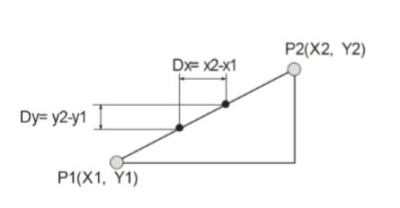
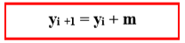

Inkrementalni algoritam je poznat još i kao DDA algoritam što je skraćenica za digitalno diferencijalni algoritam.
Predstavlja optimizovanu verziju nagibnog algoritma.
Naime, kod nagibnog algoritma kao jedan od problema se navodi množenje decimalnim vrednostima u pokretnom zarezu.
Obratimo pažnju na sledeću sliku:

Možemo uočiti da je m = (x2 – x1) / (y2 – y1) pod pretpostavkom da je x1< x2 i da je abs(m) < 1.
U i-toj iteraciji imamo:
yi = m*xi + b
yi+1 = m*xi+1 + b = m * (xi + dx) = m*xi + b + m*dx = yi + m*dx
S obzirom da vršimo inkrementiranje koordinata po x-osi => dx = 1.

Ovim smo rešili problem množenja realnim brojevima.
U polju ispod je dat pseudokod za rasterizaciju prave korišćenjem inkrementalnog algoritma.
1.dy = y1 -y0; 2.dx = x1 -x0; 3.m = dy / dx; 4.y = y0; 5.for x := x0; x <= x1; x++ 6.WritePixel(pDC, x,int(y+0.5),value); 7.y += m; 8.endfor
Nedostaci sa kojima se ovde susrećemo su sledeći:
1. m je realna vrednost izračunata sa nekom tačnošću i greška se nagomilava.
2. I dalje vršimo zaokruživanje.
2. Promenljive su i dalje realnog tipa.